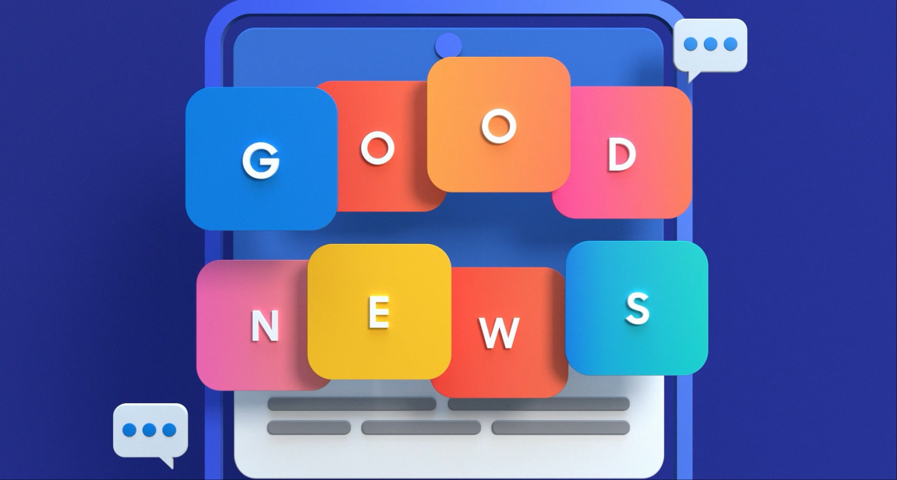
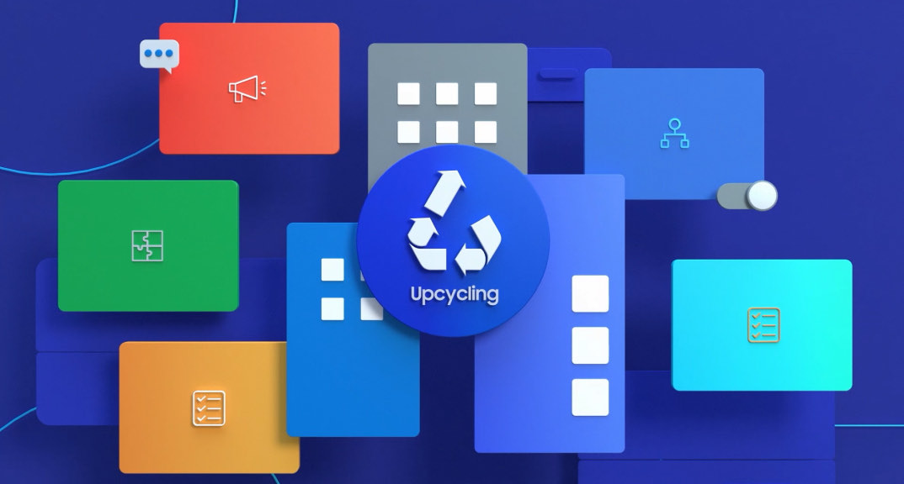
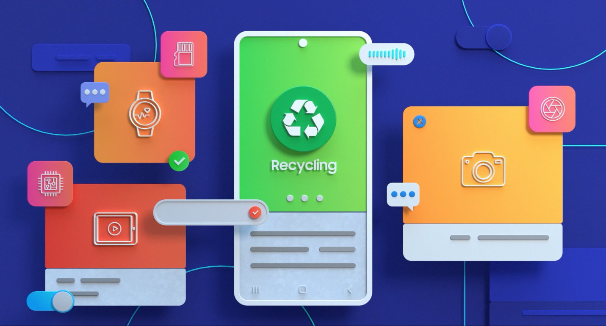
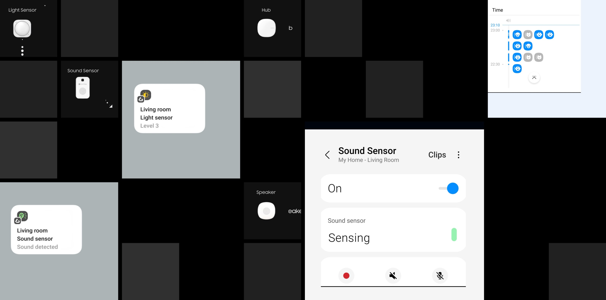
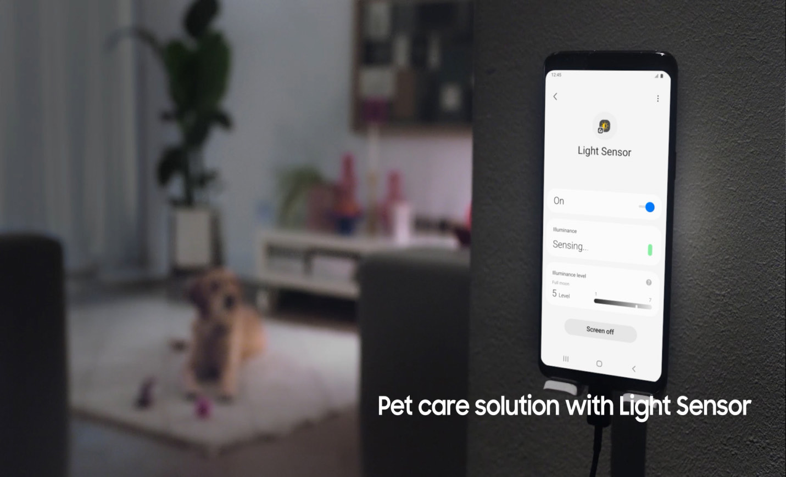
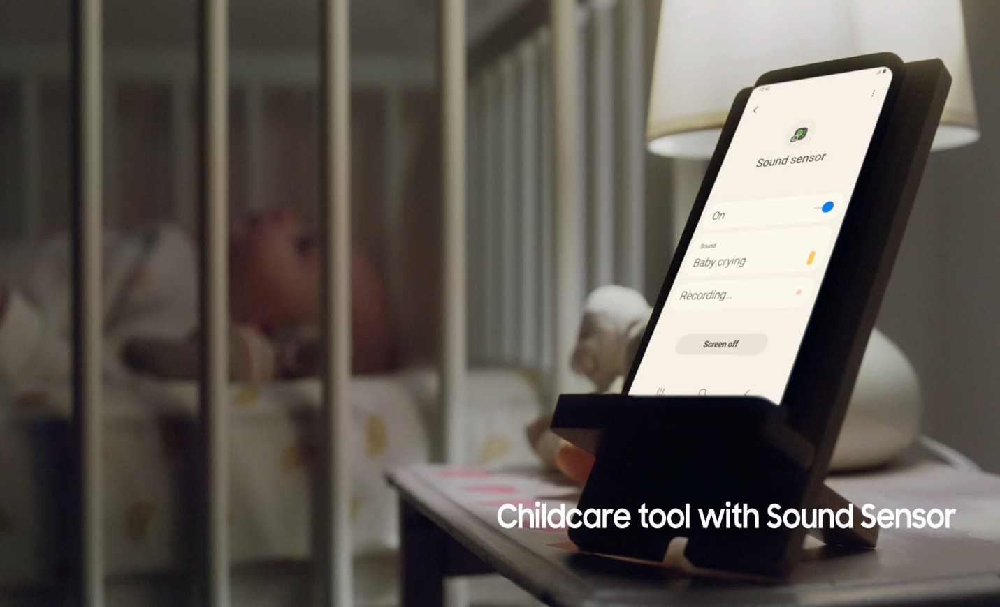
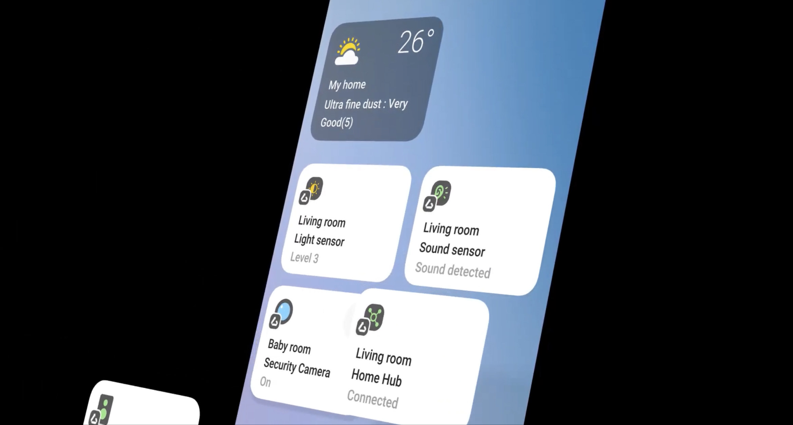

Smart things
2D Motion Project
Motion for Everyday Living
SmartThings의 다양한 IoT 기능과 센서 기술을 쉽고 직관적으로 전달하기
위해 브랜드 영상에 삽입되는
2D 모션 그래픽을 제작했습니다. 센서가 주변 환경을 감지하고, 연결된
기기가 상황에 맞게 반응하는 과정을
시각화하여 복잡한 서비스의 작동 원리를 자연스럽게 이해할 수 있도록
구성했습니다.
보이지 않는 연결은
어떻게 일상을 바꿀 수 있을까?
SmartThings는 다양한 센서를 통해 주변의 밝기와 소리, 생활 환경의 변화를 감지하고 연결된 기기가 적절하게 반응하도록 돕습니다. 이러한 보이지 않는 감지와 연결의 과정을 모션 그래픽으로 시각화하여, 기술이 일상에서 어떻게 작동하고 어떤 변화를 만드는지 직관적으로 전달했습니다.
Visualizing Sustainable Connections
SmartThings가 만드는 연결은 단순히 기기를 제어하는 것을 넘어 보다 효율적인 자원 활용으로 이어집니다. 다양한 기능과 디바이스가 하나의 시스템으로 연결되고, 그 연결이 업사이클링과 리사이클링이라는 가치로 확장되는 과정을 일관된 모션 그래픽으로 표현했습니다.



Designing Motion Assets
브랜드 영상 전반에 활용되는 다양한 모션 그래픽 에셋을 제작했습니다. 센서의 동작과 자동화 과정, 디바이스 간 연결, 인터페이스 요소 등 서비스를 설명하는 핵심 그래픽을 하나의 시스템으로 구성하여 영상 전반에서 일관된 시각 경험을 제공했습니다.

Bringing Motion into Everyday Life
제작한 모션 그래픽을 실제 촬영 장면과 결합하여 SmartThings가 일상 속에서 어떻게 활용되는지를 자연스럽게 표현했습니다. 조도 변화에 따른 자동화, 반려동물과 아기의 소리 인식 등 다양한 생활 환경을 시각적으로 연결하여 기술이 실제 경험으로 이어지는 과정을 전달했습니다.


Connected in Motion
영상 전반에 사용된 모션 요소를 하나의 흐름으로 연결하여 SmartThings의 연결성과 서비스 구조를 직관적으로 전달했습니다. 센서와 인터페이스가 순차적으로 구성되는 움직임을 통해 브랜드의 핵심 경험을 정리하고, SmartThings 로고 애니메이션으로 자연스럽게 마무리했습니다.

- Creative Director
- Ryan JW Kim
- Project Manager
- Park Min Jun
- Art Direction
- FoodBook 945
- Design / Compositing
- Ahn Jeong Yeol
- 3D Animation
- PL2 Production
- Client
- Samsung / SmartThings